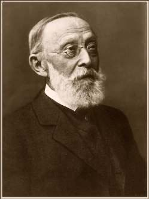
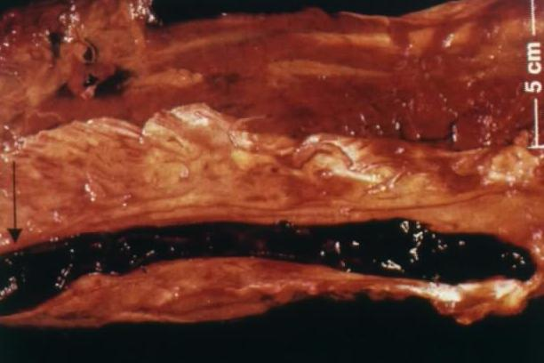
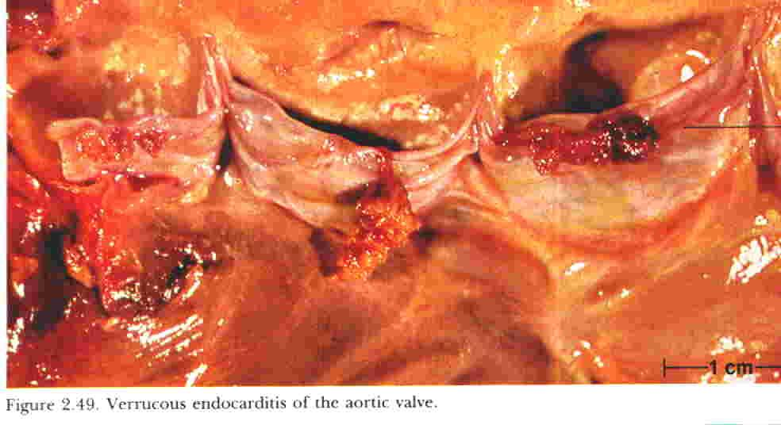
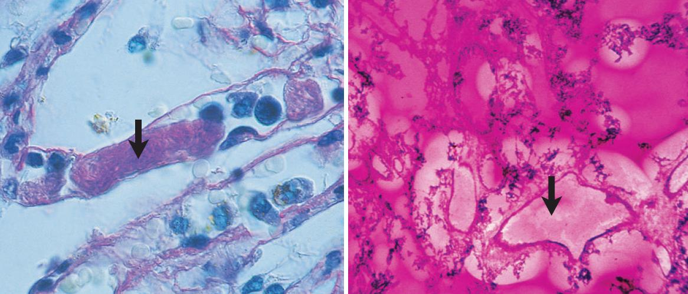
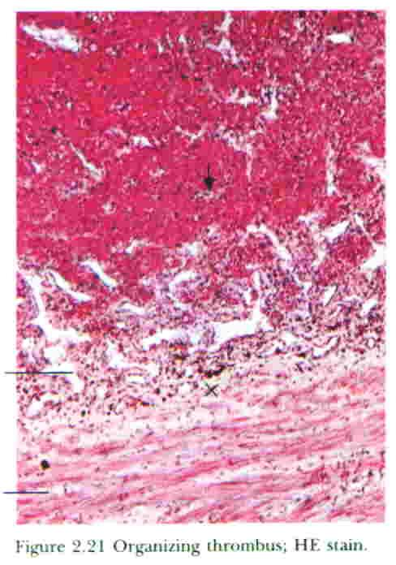
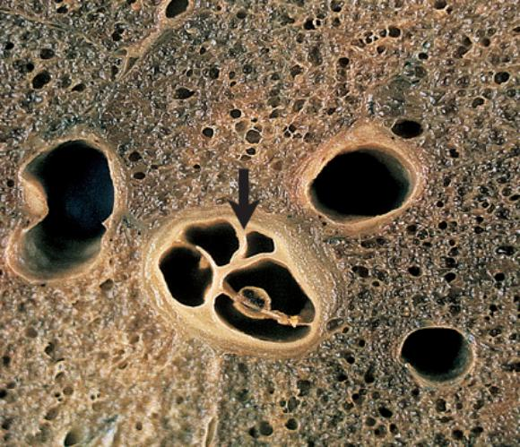

3.6Virchow's Triad — the Three Roads to Thrombosisسهگانهٔ ویرشو — سه مسیر رسیدن به ترومبوز
Definitionتعریف
Thrombosis is the formation of an adherent clotted mass of blood within the cardiovascular system of a living body. The mass itself is a thrombus.ترومبوز عبارت است از تشکیل تودهٔ لختهشده و چسبیدهٔ خون درون دستگاه قلبی–عروقی بدنِ زنده. خودِ توده، ترومبوس نام دارد.
Every word in that definition is load-bearing. Adherent — it is attached to the wall, which distinguishes it from a post-mortem clot. Within the cardiovascular system — it can arise in cardiac chambers, on valve cusps, in arteries, veins or capillaries. In a living body — a clot formed after death is not a thrombus.هر واژه در این تعریف وزن دارد. چسبیده — به دیواره متصل است، که آن را از لختهٔ پس از مرگ جدا میکند. درون دستگاه قلبی–عروقی — میتواند در حفرات قلب، روی لتهای دریچه، در شریان، ورید یا مویرگ ایجاد شود. در بدن زنده — لختهای که پس از مرگ تشکیل شود ترومبوس نیست.
Fig 3.9Virchow's triad. Endothelial injury, abnormal blood flow and hypercoagulability. The arrows are bidirectional for a reason: the three factors are not independent but reinforce one another — turbulence injures endothelium, injured endothelium disturbs flow, and both promote local hypercoagulability.سهگانهٔ ویرشو. آسیب اندوتلیال، جریان غیرطبیعی خون و حالت پرانعقادی. پیکانها بیدلیل دوطرفه نیستند: این سه عامل مستقل نیستند بلکه یکدیگر را تقویت میکنند — آشفتگی جریان اندوتلیوم را آسیب میزند، اندوتلیوم آسیبدیده جریان را مختل میکند و هر دو حالت پرانعقادی موضعی ایجاد مینمایند.

Fig 3.10 Rudolf Virchow (1821–1902), who formulated the triad and, more broadly, established that disease originates in cellular abnormality.رودولف ویرشو (۱۸۲۱–۱۹۰۲) که این سهگانه را تدوین کرد و بهطور کلیتر ثابت نمود که بیماری از اختلال سلولی سرچشمه میگیرد.
① Endothelial injury① آسیب اندوتلیال
The dominant influence, and the one that can cause thrombosis by itself, without help from the other two. It is particularly important in the heart and arteries, where rapid flow would normally prevent platelets adhering and would dilute activated clotting factors — so something must actively overcome that protection.تأثیر غالب، و تنها عاملی که میتواند بهتنهایی و بدون کمک دو عامل دیگر ترومبوز ایجاد کند. این عامل بهویژه در قلب و شریانها اهمیت دارد، جایی که جریان تند بهطور طبیعی مانع چسبیدن پلاکت میشود و فاکتورهای انعقادی فعال را رقیق میکند — پس چیزی باید فعالانه بر این محافظت غلبه کند.
Mechanism — how endothelial injury initiates a thrombusمکانیسم — چگونه آسیب اندوتلیال ترومبوس را آغاز میکند
The anti-thrombotic surface is lost or switched off (physical denudation, or functional activation by cytokines, endotoxin, hyperlipidaemia, smoking, hypertension, homocysteine or radiation).Recall from §3.2 that the endothelium is actively anti-thrombotic. Losing that activity alone is enough to shift the balance.سطح ضدترومبوتیک از بین میرود یا خاموش میشود (کندهشدن فیزیکی، یا فعالسازی عملکردی توسط سایتوکاین، اندوتوکسین، چربی خون بالا، سیگار، فشار خون بالا، هموسیستئین یا پرتو).به یاد آورید از بخش ۳.۲ که اندوتلیوم فعالانه ضدترومبوتیک است. صرفِ از دست رفتن این فعالیت برای بر هم زدن تعادل کافی است.
Subendothelial collagen and von Willebrand factor become accessible.These are the ligands for platelet GpIa/IIa and GpIb — the physical trigger for adhesion.کلاژن و فاکتور فونویلبراند زیراندوتلیالی در دسترس قرار میگیرند.اینها لیگاندهای گیرندههای GpIa/IIa و GpIb پلاکتاند — محرک فیزیکی چسبندگی.
Platelets adhere, activate, release ADP, TXA2 and serotonin, and aggregate.This is the release reaction of §3.3, now occurring where there is no wound to seal.پلاکتها میچسبند، فعال میشوند، ADP، ترومبوکسان و سروتونین آزاد کرده و تجمع مییابند.همان واکنش آزادسازی بخش ۳.۳ است که اکنون در جایی رخ میدهد که زخمی برای بستن وجود ندارد.
Tissue factor is expressed by the injured endothelium and by any exposed subendothelial cells, triggering the extrinsic cascade; the activated platelet surface provides the phospholipid for the cascade complexes.Tissue factor is the physiological initiator; the platelet supplies the assembly platform. Neither works efficiently without the other, which is why the two arms of hemostasis are obligatorily coupled.فاکتور بافتی توسط اندوتلیوم آسیبدیده و هر سلول زیراندوتلیالی در معرض، بیان میشود و آبشار خارجی را راه میاندازد؛ سطح پلاکت فعال فسفولیپید لازم برای کمپلکسهای آبشار را فراهم میکند.فاکتور بافتی آغازگر فیزیولوژیک است و پلاکت سکوی سرهمشدن را تأمین میکند. هیچکدام بدون دیگری مؤثر نیست و به همین دلیل دو شاخهٔ هموستاز اجباراً به هم جفت شدهاند.
Thrombin is generated; fibrinogen is converted to fibrin, which traps more platelets and red cells; the mass enlarges and becomes adherent.Once fibrin cross-links, the thrombus is anchored to the wall and can no longer be swept away — it is now committed to grow or to be organized.ترومبین تولید میشود؛ فیبرینوژن به فیبرین تبدیل میگردد که پلاکت و گلبول قرمز بیشتری به دام میاندازد؛ توده بزرگتر و چسبنده میشود.پس از اتصال متقاطع فیبرین، ترومبوس به دیواره لنگر میاندازد و دیگر شسته نمیشود — اکنون یا باید رشد کند یا سازمان یابد.
Clinical causes of endothelial injuryعلل بالینی آسیب اندوتلیال
Ulcerated atherosclerotic plaque — the single most important cause of arterial thrombosis; plaque rupture exposes the highly thrombogenic lipid core.پلاک آترواسکلروتیک زخمیشده — مهمترین علت واحد ترومبوز شریانی؛ پارگی پلاک، هستهٔ چربی بهشدت ترومبوژن را در معرض قرار میدهد.
Myocardial infarction — injured endocardium overlying the infarct is a nidus for mural thrombus.انفارکتوس میوکارد — اندوکارد آسیبدیدهٔ روی ناحیهٔ انفارکته، کانون تشکیل ترومبوس جداری است.
Vasculitis; trauma and surgery; indwelling catheters.واسکولیت؛ تروما و جراحی؛ کاتترهای داخل عروقی.
Hypertension and turbulent flow — chronic mechanical stress activates endothelium without stripping it.فشار خون بالا و جریان آشفته — تنش مکانیکی مزمن اندوتلیوم را بدون کندهشدن فعال میکند.
② Abnormal blood flow — stasis and turbulence② جریان غیرطبیعی خون — رکود و آشفتگی
Normal blood flow is laminar: it moves in concentric layers, fastest in the centre, and the cellular elements are confined to that central stream. A cell-free plasmatic zone separates them from the endothelium. Anything that destroys laminar flow removes that separation.جریان طبیعی خون لایهای است: در لایههای هممرکز حرکت میکند، در مرکز تندترین سرعت را دارد و عناصر سلولی در همان جریان مرکزی محدود میمانند. یک ناحیهٔ پلاسمایی بدون سلول، آنها را از اندوتلیوم جدا میکند. هر چیزی که جریان لایهای را از بین ببرد، این جدایی را حذف میکند.
Mechanism — six ways abnormal flow promotes thrombosisمکانیسم — شش راهی که جریان غیرطبیعی ترومبوز را تسهیل میکند
It disrupts laminar flow and brings platelets into contact with the endothelium.The protective plasmatic zone is abolished, so platelets can now physically reach the wall.جریان لایهای را بر هم میزند و پلاکتها را با اندوتلیوم در تماس قرار میدهد.ناحیهٔ محافظ پلاسمایی از بین میرود، پس پلاکتها اکنون میتوانند فیزیکی به دیواره برسند.
It prevents dilution of activated clotting factors.In normal flow, activated factors are swept away and diluted below the threshold needed to propagate the cascade. In stasis they accumulate locally until that threshold is crossed.از رقیقشدن فاکتورهای انعقادی فعال جلوگیری میکند.در جریان طبیعی، فاکتورهای فعال شسته و به زیر آستانهٔ لازم برای ادامهٔ آبشار رقیق میشوند. در رکود، بهصورت موضعی انباشته میشوند تا از آن آستانه بگذرند.
It retards the inflow of clotting factor inhibitors.Antithrombin III, protein C and TFPI must be delivered by flowing blood. If fresh blood does not arrive, the brakes are never applied.ورود مهارکنندههای فاکتور انعقادی را کند میکند.آنتیترومبین III، پروتئین C و مهارکنندهٔ مسیر فاکتور بافتی باید توسط خون جاری رسانده شوند. اگر خون تازه نرسد، ترمزها هرگز اعمال نمیشوند.
It permits the build-up of platelet aggregates and nascent fibrin in the sluggish stream or in pockets of stasis.Small aggregates that would normally be dispersed by shear are allowed to consolidate.اجازهٔ انباشت تجمعات پلاکتی و فیبرین نوپدید را میدهد، در جریان کند یا در حفرههای راکد.تجمعات کوچکی که معمولاً با نیروی برش پراکنده میشوند، فرصت تحکیم پیدا میکنند.
It promotes endothelial hypoxia and injury, causing platelet and fibrin deposition and reducing release of t-PA.Endothelial cells depend on flowing blood for oxygen; hypoxic endothelium switches to the pro-thrombotic phenotype and stops secreting fibrinolytic t-PA.هیپوکسی و آسیب اندوتلیال ایجاد میکند که به رسوب پلاکت و فیبرین انجامیده و آزادسازی t-PA را کاهش میدهد.سلولهای اندوتلیال برای اکسیژن به خون جاری وابستهاند؛ اندوتلیوم هیپوکسیک به فنوتیپ پروترومبوتیک تغییر یافته و ترشح t-PA فیبرینولیتیک را متوقف میکند.
Turbulence itself is a mechanism of endothelial injury.Disturbed shear stress alters endothelial gene expression, up-regulating adhesion molecules and tissue factor. This is why the triad's arms are interlinked rather than separate.خودِ آشفتگی، سازوکاری برای آسیب اندوتلیال است.تنش برشی مختل، بیان ژن اندوتلیال را تغییر داده و مولکولهای چسبندگی و فاکتور بافتی را افزایش میدهد. به همین دلیل شاخههای سهگانه به هم پیوستهاند نه جدا.
Table 3.4 Turbulence versus stasisجدول ۳.۴ — آشفتگی در برابر رکود
Whereکجا
Clinical examplesمثالهای بالینی
Turbulenceآشفتگی
Mainly arteries and cardiac chambersعمدتاً شریانها و حفرات قلب
Mainly veins and dilated chambersعمدتاً وریدها و حفرات متسع
Immobility (bed rest, long-haul flight, plaster cast, post-operative state); atrial fibrillation (stasis in the dilated left atrial appendage); dilated cardiomyopathy; ventricular aneurysm after MI; hyperviscosity (polycythaemia vera, sickle cell disease, multiple myeloma)بیحرکتی (استراحت در بستر، پرواز طولانی، گچگیری، وضعیت پس از عمل)؛ فیبریلاسیون دهلیزی (رکود در زائدهٔ متسع دهلیز چپ)؛ کاردیومیوپاتی اتساعی؛ آنوریسم بطنی پس از انفارکتوس؛ افزایش غلظت خون (پلیسیتمی ورا، بیماری سلول داسی، مولتیپل میلوما)
③ Hypercoagulability③ حالت پرانعقادی
Any alteration of the blood — most often of the clotting mechanism — that predisposes to thrombosis. Of all the coagulation factors, thrombin is the most important. Hypercoagulability is the least common of the three arms as a sole cause, but it is the one you must actively look for in a young patient or an unusual site of thrombosis.هر تغییری در خون — اغلب در سازوکار انعقادی — که زمینهساز ترومبوز شود. در میان تمام فاکتورهای انعقادی، ترومبین مهمترین است. حالت پرانعقادی بهعنوان علت منفرد، کمشایعترین شاخهٔ این سهگانه است، اما همان شاخهای است که در بیمار جوان یا در محل غیرمعمول ترومبوز باید فعالانه دنبالش بگردید.
3.7Hypercoagulable Statesحالتهای پرانعقادی
Table 3.5 Primary (inherited) and secondary (acquired) thrombophiliaجدول ۳.۵ — ترومبوفیلی اولیه (ارثی) و ثانویه (اکتسابی)
Conditionوضعیت
Mechanismمکانیسم
Noteنکته
Primary — inheritedاولیه — ارثی
Factor V Leidenفاکتور ۵ لایدن
A point mutation replaces arginine with glutamine at position 506, the site where activated protein C cleaves factor Va. Factor Va therefore cannot be inactivated and continues to drive thrombin generation.یک جهش نقطهای، آرژنین را در موقعیت ۵۰۶ با گلوتامین جایگزین میکند؛ همان جایی که پروتئین C فعال فاکتور Va را میشکافد. بنابراین فاکتور Va غیرفعال نمیشود و تولید ترومبین را ادامه میدهد.
The commonest inherited thrombophilia — 2–15% of Caucasians; present in up to 60% of patients with recurrent DVT.شایعترین ترومبوفیلی ارثی — ۲ تا ۱۵ درصد سفیدپوستان؛ تا ۶۰ درصد بیماران با ترومبوز وریدی عمقی مکرر.
Prothrombin G20210Aپروترومبین G20210A
A mutation in the 3′ untranslated region increases prothrombin transcript stability → higher plasma prothrombin → more thrombin.جهشی در ناحیهٔ ترجمهنشدهٔ ′۳ پایداری رونوشت پروترومبین را افزایش میدهد ← پروترومبین پلاسمایی بالاتر ← ترومبین بیشتر.
Second commonest; ~1–2% of the population.دومین مورد شایع؛ حدود ۱ تا ۲ درصد جمعیت.
Antithrombin III deficiencyکمبود آنتیترومبین III
Loss of the principal inhibitor of thrombin and factors IXa, Xa, XIa, XIIa.از دست رفتن مهارکنندهٔ اصلی ترومبین و فاکتورهای IXa، Xa، XIa و XIIa.
Presents as apparent heparin resistance: PTT fails to rise appropriately with heparin.بهصورت مقاومت ظاهری به هپارین تظاهر میکند: PTT با هپارین بهاندازهٔ لازم بالا نمیرود.
Protein C or S deficiencyکمبود پروتئین C یا S
Factors Va and VIIIa are not inactivated.فاکتورهای Va و VIIIa غیرفعال نمیشوند.
Risk of warfarin-induced skin necrosis: protein C has a short half-life, so starting warfarin transiently produces a net pro-coagulant state.خطر نکروز پوستی ناشی از وارفارین: نیمهعمر پروتئین C کوتاه است، پس شروع وارفارین بهطور گذرا حالت خالصِ پرانعقادی ایجاد میکند.
Hyperhomocysteinaemiaهیپرهموسیستئینمی
Homocysteine is directly toxic to endothelium and inhibits antithrombin III and thrombomodulin.هموسیستئین مستقیماً برای اندوتلیوم سمی است و آنتیترومبین III و ترومبومودولین را مهار میکند.
Causes both arterial and venous thrombosis. From MTHFR mutation, cystathionine β-synthase deficiency, or B6/B12/folate deficiency.هم ترومبوز شریانی و هم وریدی ایجاد میکند. ناشی از جهش MTHFR، کمبود سیستاتیونین بتا-سنتاز، یا کمبود ویتامین B6، B12 و فولات.
Secondary — acquiredثانویه — اکتسابی
Prolonged immobilisationبیحرکتی طولانی
Stasis — loss of the calf muscle pump.رکود — از دست رفتن پمپ عضلهٔ ساق.
Bed rest, long flights, plaster cast, post-operative period.استراحت در بستر، پروازهای طولانی، گچگیری، دورهٔ پس از عمل.
Surgery and traumaجراحی و تروما
Massive tissue factor release, endothelial injury, immobility and an acute-phase rise in fibrinogen — all three arms of the triad at once.آزادسازی گستردهٔ فاکتور بافتی، آسیب اندوتلیال، بیحرکتی و افزایش فاز حاد فیبرینوژن — هر سه شاخهٔ سهگانه همزمان.
Orthopaedic surgery (hip, knee) carries the highest risk of all.جراحی ارتوپدی (لگن، زانو) بالاترین خطر را در میان همه دارد.
Malignancyبدخیمی
Tumours release tissue factor and other procoagulants.تومورها فاکتور بافتی و سایر مواد پروانعقادی آزاد میکنند.
Trousseau syndrome — migratory thrombophlebitis, classically with pancreatic, lung or gastric adenocarcinoma. May be the first sign of an occult cancer.سندرم تروسو — ترومبوفلبیت مهاجر، بهطور کلاسیک با آدنوکارسینوم پانکراس، ریه یا معده. ممکن است نخستین نشانهٔ سرطان پنهان باشد.
Autoantibodies against phospholipid-binding proteins activate platelets and endothelium.خودآنتیبادیها علیه پروتئینهای متصلشونده به فسفولیپید، پلاکت و اندوتلیوم را فعال میکنند.
The paradox: prolonged PTT in vitro but thrombosis in vivo. Recurrent arterial and venous thrombosis plus recurrent fetal loss; often with SLE.تناقض:PTT طولانی در آزمایشگاه اما ترومبوز در بدن. ترومبوز مکرر شریانی و وریدی بهعلاوهٔ سقط مکرر؛ اغلب همراه با لوپوس.
Heparin-induced thrombocytopenia (HIT)ترومبوسیتوپنی ناشی از هپارین
IgG against the heparin–platelet factor 4 complex binds platelets via FcγRIIA and activates them.آنتیبادی IgG علیه کمپلکس هپارین–فاکتور پلاکتی ۴، از طریق گیرندهٔ FcγRIIA به پلاکت متصل شده و آن را فعال میکند.
The second paradox: a low platelet count with thrombosis, not bleeding — platelets are consumed by being activated. Stop heparin; start a direct thrombin inhibitor.تناقض دوم: شمارش پلاکت پایین همراه با ترومبوز، نه خونریزی — پلاکتها بهدلیل فعالشدن مصرف میشوند. هپارین را قطع و مهارکنندهٔ مستقیم ترومبین شروع کنید.
Oral contraceptives, pregnancy, puerperiumقرصهای ضدبارداری، بارداری، دورهٔ پس از زایمان
Oestrogen increases hepatic synthesis of fibrinogen and factors II, VII, IX, X and reduces protein S; the gravid uterus compresses pelvic veins.استروژن ساخت کبدی فیبرینوژن و فاکتورهای ۲، ۷، ۹، ۱۰ را افزایش و پروتئین S را کاهش میدهد؛ رحم باردار وریدهای لگنی را میفشارد.
Risk multiplies dramatically if combined with smoking or factor V Leiden.خطر در صورت همراهی با سیگار یا فاکتور ۵ لایدن بهشدت چند برابر میشود.
Nephrotic syndromeسندرم نفروتیک
Urinary loss of antithrombin III along with albumin.دفع ادراری آنتیترومبین III همراه با آلبومین.
Classically causes renal vein thrombosis.بهطور کلاسیک باعث ترومبوز ورید کلیوی میشود.
Disseminated intravascular coagulationانعقاد منتشر داخل عروقی
See §3.11.بخش ۳.۱۱ را ببینید.
Simultaneous thrombosis and bleeding.ترومبوز و خونریزی همزمان.
Othersسایر موارد
Severe burns, advanced age, obesity, smoking, sickle cell disease, polycythaemia vera, prosthetic cardiac valves.سوختگی شدید، سن بالا، چاقی، سیگار، بیماری سلول داسی، پلیسیتمی ورا، دریچههای مصنوعی قلب.
High-Yield — when to suspect inherited thrombophiliaنکتهٔ کلیدی — چه زمانی به ترومبوفیلی ارثی شک کنیم
Investigate for a primary hypercoagulable state when thrombosis occurs: under 50 years of age; without provocation; recurrently; at an unusual site (cerebral, hepatic, portal or mesenteric vein); with a strong family history; or alongside recurrent fetal loss.وقتی ترومبوز در این شرایط رخ دهد، حالت پرانعقادی اولیه را بررسی کنید: سن زیر ۵۰ سال؛ بدون عامل تحریککننده؛ بهصورت مکرر؛ در محل غیرمعمول (ورید مغزی، کبدی، پورت یا مزانتریک)؛ با سابقهٔ خانوادگی قوی؛ یا همراه با سقطهای مکرر.
3.8Morphology — Lines of Zahn and the Four Thrombus Typesمورفولوژی — خطوط زان و چهار نوع ترومبوس
Fig 3.11 Lines of Zahn, gross. Alternating pale and dark laminations are visible on the cut surface of the thrombus.خطوط زان، نمای ماکروسکوپی. لایههای متناوب روشن و تیره روی سطح برش ترومبوس دیده میشوند.
Lines of Zahnخطوط زان
Named after the Swiss–German pathologist Friedrich Wilhelm Zahn, these are alternating pale and dark laminations within a thrombus: pale layers of platelets and fibrin alternating with dark, red-cell-rich layers.این خطوط که به نام آسیبشناس سوئیسی–آلمانی، فریدریش ویلهلم زان نامگذاری شدهاند، لایههای متناوب روشن و تیره درون ترومبوساند: لایههای روشن پلاکت و فیبرین در تناوب با لایههای تیرهٔ سرشار از گلبول قرمز.
Mechanism — why the laminations form, and why they matterمکانیسم — چرا این لایهبندی تشکیل میشود و چرا مهم است
A thrombus begins at a point of endothelial injury and grows into the lumen against flowing blood.Growth is not uniform — it happens in waves, driven by the pulsatile nature of flow.ترومبوس در نقطهٔ آسیب اندوتلیال آغاز شده و در برابر خون جاری به سمت مجرا رشد میکند.رشد یکنواخت نیست — بهصورت موجی و تحت تأثیر ماهیت ضربانی جریان رخ میدهد.
Platelets, being small and light, are preferentially deposited on the leading surface during rapid flow, forming a pale layer.At high shear, platelets marginate toward the vessel wall and the growing thrombus surface, while the bulkier red cells remain in the central stream.پلاکتها که کوچک و سبکاند، در جریان سریع ترجیحاً روی سطح پیشرو رسوب کرده و لایهٔ روشن میسازند.در برش بالا، پلاکتها به سمت دیوارهٔ رگ و سطح ترومبوسِ در حال رشد حاشیهنشین میشوند، در حالی که گلبولهای قرمز حجیمتر در جریان مرکزی میمانند.
Fibrin then forms across that platelet layer, trapping the red cells that happen to be passing when flow momentarily slows — producing a dark layer.Red cells are trapped passively, in proportion to how slow the stream is at that instant.سپس فیبرین روی آن لایهٔ پلاکتی تشکیل شده و گلبولهای قرمزی را که در لحظهٔ کندشدن جریان از آنجا میگذرند به دام میاندازد — و لایهٔ تیره میسازد.گلبولهای قرمز بهصورت منفعل و متناسب با کندی جریان در آن لحظه به دام میافتند.
The cycle repeats with each variation in flow, building up visible laminations.The alternation is a direct recording of the pulse — which is exactly why it is diagnostic.این چرخه با هر تغییر جریان تکرار شده و لایهبندی قابلرؤیت میسازد.این تناوب، ثبت مستقیم نبض است — و دقیقاً به همین دلیل ارزش تشخیصی دارد.
Lines of Zahn prove the thrombus formed in flowing blood in a living body — i.e. it is a true ante-mortem thrombus, not a post-mortem clot. They are most conspicuous in the heart and aorta, where flow is fastest; in slow venous flow they are present but poorly developed.خطوط زان ثابت میکنند که ترومبوس در خون جاری و در بدن زنده تشکیل شده است — یعنی یک ترومبوس واقعی پیش از مرگ است، نه لختهٔ پس از مرگ. این خطوط در قلب و آئورت که جریان تندترین است آشکارترند؛ در جریان کند وریدی وجود دارند اما ضعیفاند.
Fig 3.12 Lines of Zahn, histology. Pale eosinophilic bands of platelets and fibrin alternate with darker bands packed with red cells.خطوط زان در هیستولوژی. نوارهای ائوزینوفیلیک کمرنگ از پلاکت و فیبرین با نوارهای تیرهتر مملو از گلبول قرمز در تناوباند.
The four morphological typesچهار نوع مورفولوژیک
A venous thrombus classically grows as a propagating structure with three parts: the head attached to the wall (white thrombus), the body (mixed thrombus) and the free-floating tail (red thrombus). The tail is the dangerous part — it is poorly anchored and most likely to break off as an embolus.ترومبوس وریدی بهطور کلاسیک بهصورت ساختاری گسترشیابنده با سه بخش رشد میکند: سر که به دیواره چسبیده (ترومبوس سفید)، تنه (ترومبوس مختلط) و دم شناور آزاد (ترومبوس قرمز). دم، بخش خطرناک است — ضعیف لنگر انداخته و بیش از همه احتمال دارد جدا شده و به آمبولوس تبدیل شود.
Table 3.6 White, mixed, red and hyaline thrombiجدول ۳.۶ — ترومبوس سفید، مختلط، قرمز و هیالین
Typeنوع
Compositionترکیب
Locationمحل
Gross appearance and notesنمای ماکروسکوپی و نکات
White thrombus (pale / conglutination)ترومبوس سفید
Mainly platelets and fibrin; few red cellsعمدتاً پلاکت و فیبرین؛ گلبول قرمز اندک
The head of a thrombus, firmly attached to the wall. Arteries, cardiac chambers, valve cusps — sites of rapid flow.سر ترومبوس، محکم چسبیده به دیواره. شریانها، حفرات قلب، لتهای دریچه — محلهای جریان تند.
Dry, friable, grey-white mass. On transection, darker grey lines of Zahn are seen. Histologically shows platelet trabeculae — coral-like branching bands of platelets with neutrophils at their margins.تودهٔ خشک، شکننده و خاکستری–سفید. در برش، خطوط زان خاکستری تیرهتر دیده میشود. در هیستولوژی تیغههای پلاکتی نشان میدهد — نوارهای شاخهدار مرجانمانند از پلاکت با نوتروفیل در حاشیه.
Mixed thrombusترومبوس مختلط
Alternating platelet/fibrin layers and red-cell layersلایههای متناوب پلاکت/فیبرین و گلبول قرمز
The body of a propagating venous thrombusتنهٔ ترومبوس وریدی در حال گسترش
White thrombus intermingled with red. This is where lines of Zahn are most clearly seen — it is literally the alternation made visible.ترومبوس سفید درهمآمیخته با قرمز. خطوط زان دقیقاً اینجا آشکارترند — این تناوب، بهصورت عینی دیده میشود.
Red thrombus (stasis / coagulation thrombus)ترومبوس قرمز
Large numbers of red cells enmeshed in fibrin, with some plateletsتعداد زیادی گلبول قرمز گرفتار در شبکهٔ فیبرین، همراه با مقداری پلاکت
The tail, and the whole of an occlusive venous thrombus. Venous system, at sites of stasis.دم، و تمام یک ترومبوس انسدادی وریدی. دستگاه وریدی، در محلهای رکود.
Dark red, moist, elastic when fresh; becomes dry, friable and grey-brown with age. Laminations poorly developed because flow is slow. Often forms a long cast of the vein lumen.در حالت تازه قرمز تیره، مرطوب و کشسان؛ با گذشت زمان خشک، شکننده و خاکستری–قهوهای میشود. لایهبندی ضعیف است چون جریان کند است. اغلب قالب بلندی از مجرای ورید میسازد.
Almost pure fibrin with entrapped platelets; no laminationsتقریباً فیبرین خالص با پلاکتهای بهدامافتاده؛ بدون لایهبندی
Microcirculation — capillaries, especially of kidney, lung, brain, liver and adrenal. Seen in DIC.میکروسیرکولاسیون — مویرگها، بهویژه در کلیه، ریه، مغز، کبد و آدرنال. در DIC دیده میشود.
Invisible to the naked eye — microscopic only. Appears as homogeneous, glassy, pink ("hyaline") plugs filling capillary lumina.با چشم غیرمسلح دیده نمیشود — فقط میکروسکوپی. بهصورت پلاگهای یکنواخت، شیشهای و صورتی («هیالین») که مجرای مویرگ را پر کردهاند.
Fig 3.13 Mixed thrombus, histology — laminated bands of platelets/fibrin and red cells.ترومبوس مختلط در هیستولوژی — نوارهای لایهلایه از پلاکت/فیبرین و گلبول قرمز.

Fig 3.14 Red (stasis) thrombus — dark red, moist, forming a cast of the vein lumen.ترومبوس قرمز (رکودی) — قرمز تیره، مرطوب، و بهشکل قالبی از مجرای ورید.Fig 3.15 Hyaline (fibrin) microthrombus (arrow) occluding a glomerular capillary in DIC.میکروترومبوس هیالین (فیبرینی) (پیکان) که مویرگ گلومرولی را در DIC مسدود کرده است.
Exam Trap — "white thrombus" versus "white infarct"دام امتحانی — «ترومبوس سفید» در برابر «انفارکت سفید»
They share an adjective and nothing else. A white thrombus is pale because it is made of platelets rather than red cells. A white infarct is pale because red cells have been lysed and cleared from a zone of necrosis in a solid organ. One is a clot; the other is dead tissue.این دو فقط یک صفت مشترک دارند و بس. ترومبوس سفید روشن است چون از پلاکت ساخته شده نه گلبول قرمز. انفارکت سفید روشن است چون گلبولهای قرمز در ناحیهٔ نکروز یک عضو توپر لیز و پاکسازی شدهاند. یکی لخته است و دیگری بافت مرده.
3.9Arterial versus Venous Thrombiترومبوس شریانی در برابر وریدی
Table 3.7 Arterial (mural / occlusive) vs venous (phlebothrombosis)جدول ۳.۷ — شریانی (جداری/انسدادی) در برابر وریدی (فلبوترومبوز)
Featureویژگی
Arterial / cardiac thrombusترومبوس شریانی/قلبی
Venous thrombusترومبوس وریدی
Dominant triad armشاخهٔ غالب سهگانه
Endothelial injury and turbulenceآسیب اندوتلیال و آشفتگی
Stasis and hypercoagulabilityرکود و حالت پرانعقادی
Compositionترکیب
Platelet-rich (white / mixed)سرشار از پلاکت (سفید/مختلط)
Red-cell-rich (red / stasis)سرشار از گلبول قرمز (قرمز/رکودی)
Occlusionانسداد
Often mural (attached to one wall, lumen partly patent) in the heart and aorta; occlusive in smaller arteriesاغلب جداری (چسبیده به یک دیواره، مجرا تا حدی باز) در قلب و آئورت؛ در شریانهای کوچکتر انسدادی
Almost invariably occlusive, forming a long cast of the lumenتقریباً همواره انسدادی و بهشکل قالبی بلند از مجرا
Direction of growthجهت رشد
Retrograde — backwards, towards the heart, against flowپسرونده — به عقب و به سمت قلب، خلاف جریان
Antegrade — with the flow, towards the heartهمجهت با جریان — به سمت قلب
Commonest sitesشایعترین محلها
Coronary > cerebral > femoral arteries; left ventricle after MI; left atrium in atrial fibrillation; abdominal aortic aneurysmشریان کرونر > مغزی > فمورال؛ بطن چپ پس از انفارکتوس؛ دهلیز چپ در فیبریلاسیون دهلیزی؛ آنوریسم آئورت شکمی
Deep veins of the lower extremity — 90%. Less common: upper extremity, periprostatic plexus, ovarian and periuterine veins, dural sinuses, portal veinوریدهای عمقی اندام تحتانی — ۹۰ درصد. کمشایعتر: اندام فوقانی، شبکهٔ اطراف پروستات، وریدهای تخمدانی و اطراف رحم، سینوسهای دورا، ورید پورت
Main consequenceپیامد اصلی
Ischaemia and infarction of the tissue downstreamایسکمی و انفارکتوس بافت پاییندست
Congestion and edema upstream, plus pulmonary embolismاحتقان و ادم بالادست، بهعلاوهٔ آمبولی ریه
Fig 3.16 Mural thrombus in the left ventricle overlying a healed myocardial infarct. It adheres to one wall and does not occlude the chamber — but it is a reservoir for systemic emboli.ترومبوس جداری در بطن چپ روی انفارکتوس ترمیمشدهٔ میوکارد. به یک دیواره چسبیده و حفره را مسدود نمیکند — اما منبعی برای آمبولیهای سیستمیک است.Fig 3.17 Another mural thrombus, filling the apex of a dilated left ventricle where stasis is greatest.ترومبوس جداری دیگری که نوک بطن چپِ متسع را پر کرده — جایی که رکود بیشترین است.Fig 3.18 Occlusive (coagulation) thrombus filling a femoral vein — the classic source of a pulmonary embolus.ترومبوس انسدادی (انعقادی) که ورید فمورال را پر کرده — منبع کلاسیک آمبولی ریه.
3.10Vegetations — Thrombi on Heart Valvesوژتاسیون — ترومبوس روی دریچههای قلب
Thrombotic masses on valve cusps are called vegetations. Three kinds matter:تودههای ترومبوتیک روی لتهای دریچه را وژتاسیون مینامند. سه نوع اهمیت دارند:
Table 3.8 Three kinds of valvular vegetationجدول ۳.۸ — سه نوع وژتاسیون دریچهای
Typeنوع
Natureماهیت
Key featuresویژگیهای کلیدی
Infective endocarditisاندوکاردیت عفونی
Thrombus containing organisms, formed on a damaged or prosthetic valveترومبوسی حاوی میکروارگانیسم که روی دریچهٔ آسیبدیده یا مصنوعی تشکیل شده
Large, bulky, friable, destructive — erodes the cusp and can perforate it. Emboli are septic and produce abscesses and mycotic aneurysms.بزرگ، حجیم، شکننده و تخریبگر — لت را میخورد و میتواند سوراخ کند. آمبولیها سپتیکاند و آبسه و آنوریسم میکوتیک ایجاد میکنند.
Sterile fibrin–platelet deposits on an essentially normal valve, in a hypercoagulable patientرسوبات استریل فیبرین–پلاکت روی دریچهای عمدتاً سالم، در بیمار با حالت پرانعقادی
Small, bland, non-destructive, along the line of closure. Associated with advanced malignancy (especially mucin-secreting adenocarcinoma) and DIC. Still embolises.کوچک، بیخطر از نظر التهابی، غیرتخریبی و در امتداد خط بستهشدن دریچه. همراه با بدخیمی پیشرفته (بهویژه آدنوکارسینوم موسینساز) و DIC. با این حال آمبولی میدهد.
Libman–Sacks endocarditisاندوکاردیت لیبمن–ساکس
Sterile verrucous vegetations in systemic lupus erythematosusوژتاسیونهای زگیلمانند استریل در لوپوس اریتماتوی سیستمیک
Small, warty, and characteristically on both surfaces of the cusp. Driven by immune complex and complement deposition along the endocardium, with secondary platelet aggregation; strongly associated with antiphospholipid antibodies.کوچک، زگیلی و بهطور مشخص روی هر دو سطح لت. ناشی از رسوب کمپلکس ایمنی و کمپلمان در امتداد اندوکارد با تجمع ثانویهٔ پلاکت؛ ارتباط قوی با آنتیبادیهای آنتیفسفولیپید.

Fig 3.19 Verrucous (Libman–Sacks) endocarditis of the aortic valve — small warty vegetations along the cusps.اندوکاردیت زگیلی (لیبمن–ساکس) دریچهٔ آئورت — وژتاسیونهای زگیلی کوچک در امتداد لتها.Fig 3.20 Valvular vegetations (arrows) on the atrial surface of a mitral valve leaflet.وژتاسیونهای دریچهای (پیکانها) روی سطح دهلیزی لت دریچهٔ میترال.
3.11Disseminated Intravascular Coagulationانعقاد منتشر داخل عروقی

Fig 3.21 DIC. Fibrin microthrombi (arrows) occlude capillaries in the lung. Thousands of such plugs form simultaneously throughout the microcirculation.DIC. میکروترومبوسهای فیبرینی (پیکانها) مویرگهای ریه را مسدود کردهاند. هزاران پلاگ از این دست همزمان در سراسر میکروسیرکولاسیون تشکیل میشوند.
DIC is not a disease but a complication of another condition. It is the paradox of pathology: widespread thrombosis that causes bleeding.DIC یک بیماری نیست بلکه عارضهٔ بیماری دیگری است. این تناقض بزرگ پاتولوژی است: ترومبوز گستردهای که خونریزی ایجاد میکند.
Mechanism — why DIC causes thrombosis and bleedingمکانیسم — چرا DIC هم ترومبوز و هم خونریزی ایجاد میکند
A trigger releases massive amounts of tissue factor or causes widespread endothelial injury.Classic triggers: obstetric complications (abruptio placentae, amniotic fluid embolism, retained dead fetus), Gram-negative sepsis, massive trauma or burns, disseminated malignancy (especially acute promyelocytic leukaemia and mucinous adenocarcinoma), and severe transfusion reactions.یک محرک، مقادیر عظیمی فاکتور بافتی آزاد میکند یا آسیب گستردهٔ اندوتلیال ایجاد مینماید.محرکهای کلاسیک: عوارض مامایی (جداشدگی جفت، آمبولی مایع آمنیوتیک، جنین مردهٔ باقیمانده)، سپسیس گرممنفی، تروما یا سوختگی وسیع، بدخیمی منتشر (بهویژه لوسمی حاد پرومیلوسیتیک و آدنوکارسینوم موسینی) و واکنشهای شدید انتقال خون.
The coagulation cascade is activated throughout the circulation at once, not at a single site.Normally the cascade is localised by the phospholipid surface requirement and by the natural anticoagulants. A systemic trigger overwhelms both.آبشار انعقادی بهطور همزمان در سراسر گردش خون فعال میشود، نه در یک نقطه.در حالت طبیعی، آبشار با نیاز به سطح فسفولیپیدی و با ضدانعقادهای طبیعی محدود میماند. یک محرک سیستمیک بر هر دو غلبه میکند.
Fibrin microthrombi (hyaline thrombi) form in capillaries and small vessels everywhere — especially kidney, lung, brain, liver, adrenal and skin.Capillaries are where flow is slowest and surface-to-volume ratio highest, so they occlude first.میکروترومبوسهای فیبرینی (ترومبوس هیالین) در مویرگها و عروق کوچک همهجا تشکیل میشوند — بهویژه کلیه، ریه، مغز، کبد، آدرنال و پوست.مویرگها محلیاند که جریان کندترین و نسبت سطح به حجم بالاترین است، پس اول مسدود میشوند.
This causes widespread microvascular ischaemia and microangiopathic haemolytic anaemia — red cells are sheared into schistocytes as they are forced through fibrin strands.A fibrin mesh across a capillary acts like a cheese wire on a passing red cell.این باعث ایسکمی گستردهٔ میکروواسکولار و کمخونی همولیتیک میکروآنژیوپاتیک میشود — گلبولهای قرمز هنگام عبور اجباری از میان رشتههای فیبرین بریده شده و به شیستوسیت تبدیل میگردند.شبکهٔ فیبرین در عرض مویرگ، مانند سیم برش پنیر بر گلبول قرمز عبوری عمل میکند.
Meanwhile, platelets and clotting factors are consumed in making all that fibrin, and secondary fibrinolysis is activated, flooding the plasma with fibrin degradation products that further inhibit platelet function and fibrin polymerisation.The body's supply of coagulation substrate is finite. Once exhausted, the patient cannot clot at all — hence the alternative name, consumption coagulopathy.همزمان، پلاکتها و فاکتورهای انعقادی در ساخت این همه فیبرین مصرف میشوند و فیبرینولیز ثانویه فعال شده و پلاسما را از محصولات تخریب فیبرین پر میکند که خود عملکرد پلاکت و پلیمریزاسیون فیبرین را بیشتر مهار مینمایند.ذخیرهٔ مواد اولیهٔ انعقادی بدن محدود است. پس از اتمام، بیمار اصلاً نمیتواند لخته ببندد — از اینرو نام دیگر آن کواگولوپاتی مصرفی است.
The patient now bleeds — from venepuncture sites, mucosae, surgical wounds and into the skin as petechiae and purpura — while simultaneously infarcting organs.Both phenomena have the same cause. This is why DIC is so difficult to treat: anticoagulating worsens the bleeding, transfusing clotting factors feeds the thrombosis. Treatment must be directed at the underlying trigger.اکنون بیمار خونریزی میکند — از محلهای خونگیری، مخاطها، زخمهای جراحی و به داخل پوست بهصورت پتشی و پورپورا — در حالی که همزمان اعضایش دچار انفارکتوس میشوند.هر دو پدیده یک علت دارند. به همین دلیل درمان DIC بسیار دشوار است: ضدانعقاد دادن خونریزی را بدتر میکند و تزریق فاکتور انعقادی ترومبوز را تغذیه مینماید. درمان باید متوجه محرک زمینهای باشد.
Laboratory picture: ↓platelets, ↑PT, ↑PTT, ↓fibrinogen, ↑↑D-dimer and fibrin degradation products, schistocytes on the blood film.تصویر آزمایشگاهی: کاهش پلاکت، افزایش PT، افزایش PTT، کاهش فیبرینوژن، افزایش شدید D-dimer و محصولات تخریب فیبرین، و شیستوسیت در لام خون.
3.12The Four Fates of a Thrombusچهار سرنوشت ترومبوس
Fig 3.22 The potential outcomes of a venous thrombus: resolution (lysis), embolisation to the lung, and organization with recanalization.سرنوشتهای ممکن ترومبوس وریدی: حلشدن (لیز)، آمبولی به ریه، و سازمانیابی همراه با بازکانالیشدن.
① Propagation① گسترش
The thrombus enlarges by accreting more platelets and fibrin, often until it occludes a critical vessel. This is why anticoagulation is started immediately in DVT — not to dissolve the existing clot, but to stop it growing while the body's own fibrinolytic system works on it.ترومبوس با افزودن پلاکت و فیبرین بیشتر بزرگ میشود، اغلب تا جایی که رگ حیاتی را مسدود کند. به همین دلیل در ترومبوز ورید عمقی بلافاصله ضدانعقاد شروع میشود — نه برای حلکردن لختهٔ موجود، بلکه برای متوقف کردن رشد آن تا سامانهٔ فیبرینولیتیک خود بدن روی آن کار کند.
② Softening, liquefaction and resolution (lysis)② نرمشدن، مایعشدن و حلشدن (لیز)
Plasmin, activated by t-PA, digests fibrin; leukocytic enzymes soften the mass; small thrombi may disappear completely. Efficacy depends critically on age: a fresh thrombus is rich in un-cross-linked fibrin and dissolves readily, whereas an old thrombus is extensively cross-linked by factor XIIIa and partly organized, and resists lysis. This is the entire rationale for the "time is muscle / time is brain" principle — thrombolytic therapy works only within a narrow window after clot formation.پلاسمین که توسط t-PA فعال شده، فیبرین را هضم میکند؛ آنزیمهای لکوسیتی توده را نرم میسازند؛ ترومبوسهای کوچک ممکن است کاملاً ناپدید شوند. اثربخشی بهشدت به سن ترومبوس وابسته است: ترومبوس تازه سرشار از فیبرین بدون اتصال متقاطع است و بهراحتی حل میشود، در حالی که ترومبوس قدیمی بهطور گسترده توسط فاکتور XIIIa متقاطع شده و تا حدی سازمان یافته و در برابر لیز مقاومت میکند. تمام منطق اصل «زمان یعنی عضله / زمان یعنی مغز» همین است — درمان ترومبولیتیک فقط در پنجرهٔ زمانی باریکی پس از تشکیل لخته مؤثر است.
③ Embolisation③ آمبولیشدن
The thrombus, or more usually its poorly-anchored tail, detaches and travels downstream. This is the bridge from Part 3 into Part 4, and the most feared outcome of a lower-limb DVT.ترومبوس، یا معمولاً دمِ ضعیفلنگرانداختهٔ آن، جدا شده و به سمت پاییندست حرکت میکند. این پل میان بخش ۳ و بخش ۴ و ترسناکترین پیامد ترومبوز ورید عمقی اندام تحتانی است.
④ Organization and recanalization④ سازمانیابی و بازکانالیشدن
Mechanism — turning a clot back into a channelمکانیسم — تبدیل دوبارهٔ لخته به مجرا
Within 1–2 days, neutrophils and then macrophages infiltrate the thrombus and begin to digest it.A thrombus adherent to the wall is treated by the body as any other injury requiring repair — the inflammatory phase comes first.ظرف یک تا دو روز، نوتروفیلها و سپس ماکروفاژها به ترومبوس نفوذ کرده و هضم آن را آغاز میکنند.ترومبوس چسبیده به دیواره، از نظر بدن مانند هر آسیب دیگری است که نیاز به ترمیم دارد — فاز التهابی اول میآید.
From day 2–3, endothelial cells, smooth muscle cells and fibroblasts grow in from the adjacent vessel wall.Growth factors released by platelets in the thrombus itself — PDGF, TGF-β — and by thrombin recruit exactly these cell types. The thrombus provides its own scaffold and its own stimulus.از روز دوم تا سوم، سلولهای اندوتلیال، عضلهٔ صاف و فیبروبلاست از دیوارهٔ مجاور به داخل رشد میکنند.فاکتورهای رشدی که خودِ پلاکتهای درون ترومبوس آزاد میکنند — PDGF و TGF-β — و نیز ترومبین، دقیقاً همین انواع سلولی را فرا میخوانند. ترومبوس هم داربست خود را فراهم میکند و هم محرک خود را.
Over 1–2 weeks the ingrowing cells lay down collagen, converting the thrombus into a vascularised mass of granulation tissue — this is organization.This is ordinary wound healing, simply occurring inside a vessel lumen instead of across a skin wound.طی یک تا دو هفته، سلولهای واردشده کلاژن رسوب میدهند و ترومبوس را به تودهٔ عروقیشده از بافت گرانولاسیون تبدیل میکنند — این همان سازمانیابی است.این ترمیم زخم معمولی است که صرفاً بهجای سطح پوست، درون مجرای رگ رخ میدهد.
Capillary sprouts within the organizing mass elongate, anastomose and fuse into larger channels that eventually connect the two ends of the original lumen — recanalization.Angiogenesis follows the pressure gradient across the occlusion; channels that connect a high-pressure to a low-pressure end carry flow and are retained, while blind sprouts regress.جوانههای مویرگی درون تودهٔ در حال سازمانیابی بلند شده، با هم آناستوموز داده و به کانالهای بزرگتری میپیوندند که سرانجام دو انتهای مجرای اولیه را به هم وصل میکنند — بازکانالیشدن.رگزایی از گرادیان فشار در دو سوی انسداد پیروی میکند؛ کانالهایی که انتهای پرفشار را به کمفشار وصل کنند جریان میبرند و باقی میمانند، در حالی که جوانههای بنبست پسرفت میکنند.
The result is a fibrous plug crossed by several small channels — flow is partially restored but never normal.The original single wide lumen has been replaced by several narrow ones; resistance is permanently higher. Clinically this is why post-thrombotic syndrome (chronic leg swelling, pain, stasis ulcers) follows a large DVT even after successful treatment.نتیجه، یک پلاگ فیبروز است که چند کانال کوچک از آن میگذرد — جریان تا حدی برقرار میشود اما هرگز طبیعی نمیگردد.یک مجرای پهن اولیه با چند مجرای باریک جایگزین شده و مقاومت برای همیشه بالاتر است. از نظر بالینی به همین دلیل سندرم پس از ترومبوز (تورم مزمن ساق، درد، زخمهای استازی) حتی پس از درمان موفق یک ترومبوز بزرگ وریدی ایجاد میشود.
Occasionally the organized thrombus undergoes dystrophic calcification, forming a hard nodule known as a phlebolith.Necrotic and fibrotic tissue with a high local calcium–phosphate product mineralises even when serum calcium is normal. Phleboliths are commonly seen incidentally in the pelvis on X-ray.گاهی ترومبوس سازمانیافته دچار کلسیفیکاسیون دیستروفیک شده و ندول سختی به نام فلبولیت میسازد.بافت نکروتیک و فیبروتیک با حاصلضرب بالای کلسیم–فسفات موضعی، حتی با کلسیم سرم طبیعی، معدنی میشود. فلبولیتها اغلب بهطور اتفاقی در رادیوگرافی لگن دیده میشوند.

Fig 3.23 Organizing thrombus, H&E. Fibroblasts and capillaries are growing into the fibrin mass from the vessel wall.ترومبوس در حال سازمانیابی، H&E. فیبروبلاستها و مویرگها از دیوارهٔ رگ به داخل تودهٔ فیبرین رشد میکنند.Fig 3.24 Recanalization — new endothelial-lined channels traverse the organized thrombus.بازکانالیشدن — کانالهای جدید با پوشش اندوتلیال از ترومبوس سازمانیافته عبور میکنند.

Fig 3.25 A fully recanalised vessel: the single original lumen has been replaced by several smaller channels within fibrous tissue.رگی که کاملاً بازکانالی شده: مجرای واحد اولیه با چند کانال کوچکتر درون بافت فیبروز جایگزین شده است.
3.13Thrombus versus Post-mortem Clotترومبوس در برابر لختهٔ پس از مرگ
At autopsy this distinction decides whether you are looking at the cause of death or at an artefact of being dead. It is examined constantly.در کالبدشکافی، این تمایز تعیین میکند که آیا به علت مرگ نگاه میکنید یا به یک پدیدهٔ ثانویِ ناشی از مرگ. این موضوع دائماً پرسیده میشود.
Table 3.9 Ante-mortem thrombus vs post-mortem clotجدول ۳.۹ — ترومبوس پیش از مرگ در برابر لختهٔ پس از مرگ
Featureویژگی
Thrombus (ante-mortem)ترومبوس (پیش از مرگ)
Post-mortem clotلختهٔ پس از مرگ
Attachmentچسبندگی
Firmly adherent to the vessel wall — cannot be lifted out intactمحکم چسبیده به دیوارهٔ رگ — نمیتوان آن را سالم بیرون آورد
Not adherent — lifts out easily as a castنچسبیده — بهراحتی و بهشکل قالب بیرون میآید
Lines of Zahnخطوط زان
Present (proving formation in flowing blood)موجود (اثبات تشکیل در خون جاری)
Two layers by gravity sedimentation: a dark red dependent portion ("red currant jelly") and an overlying pale yellow portion ("chicken fat")دو لایه بر اثر تهنشینی ثقلی: بخش تحتانی قرمز تیره («ژلهٔ توتفرنگی») و بخش فوقانی زرد کمرنگ («چربی مرغ»)
Shapeشکل
Conforms to the site of injury; may be muralمتناسب با محل آسیب؛ ممکن است جداری باشد
An exact cast of the vessel, including branch pointsقالب دقیق رگ، شامل محل انشعابات
Mnemonicیادیار
Chicken fat over currant jelly = dead man's clot. If you can lift it out whole and it shines, the patient died with it, not from it.Chicken fat over currant jelly = لختهٔ فرد مرده. اگر بتوانید آن را دستنخورده بیرون بیاورید و براق باشد، بیمار با آن مرده است نه بهخاطر آن.
Summary — Thrombosis in three sentencesخلاصه — ترومبوز در سه جمله
Thrombus development depends on the relative contribution of the three components of Virchow's triad: endothelial injury, abnormal blood flow, and hypercoagulability.ایجاد ترومبوس به سهم نسبی سه جزء سهگانهٔ ویرشو بستگی دارد: آسیب اندوتلیال، جریان غیرطبیعی خون، و حالت پرانعقادی.
Thrombi may resolve, propagate, organize (with or without recanalization), calcify, or embolize.ترومبوسها ممکن است حل شوند، گسترش یابند، سازمان بیابند (با یا بدون بازکانالیشدن)، کلسیفیه شوند، یا آمبولی دهند.
Thrombosis injures tissue in exactly two ways: by local vascular occlusion, or by distal embolisation.ترومبوز دقیقاً به دو راه به بافت آسیب میزند: انسداد موضعی عروق، یا آمبولی به نقاط دوردست.